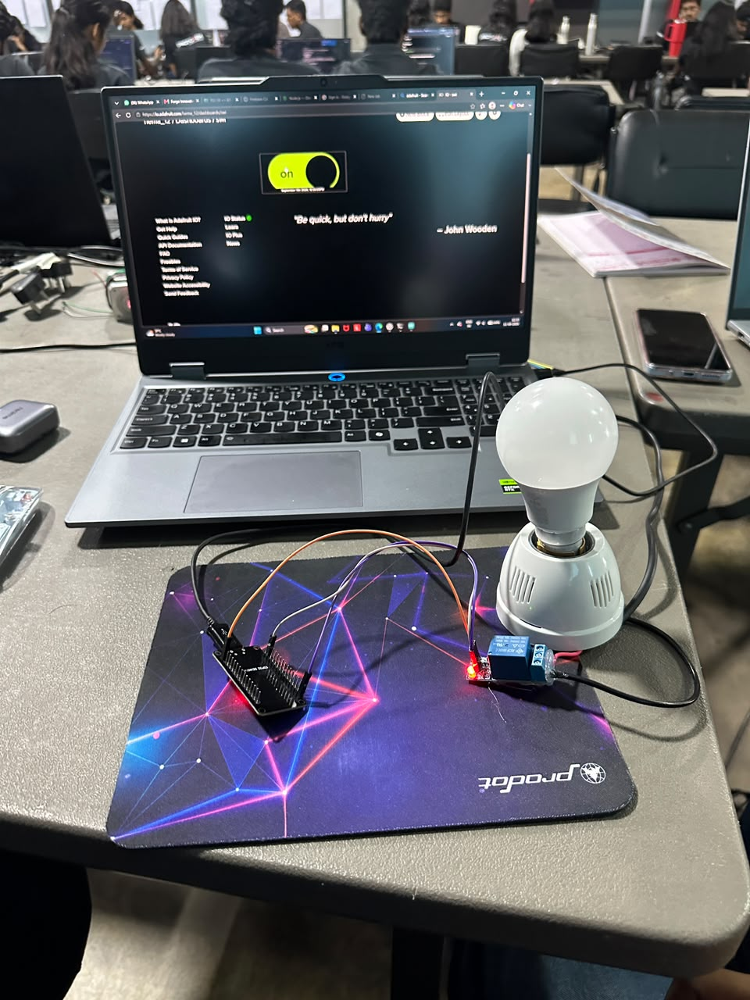
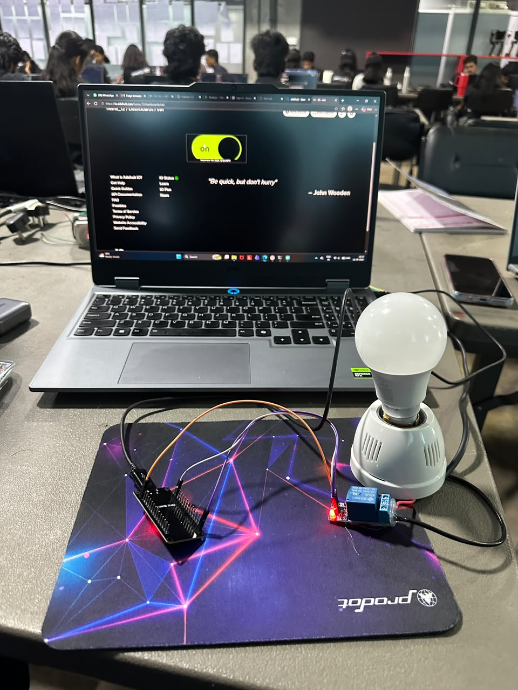
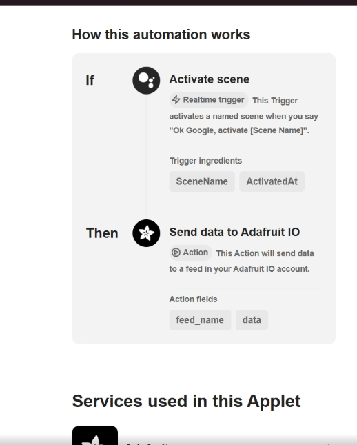
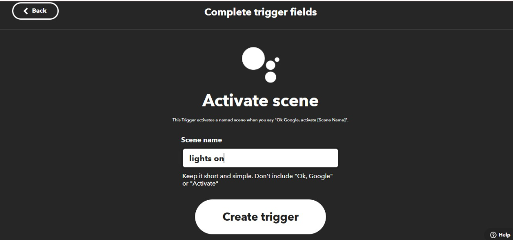
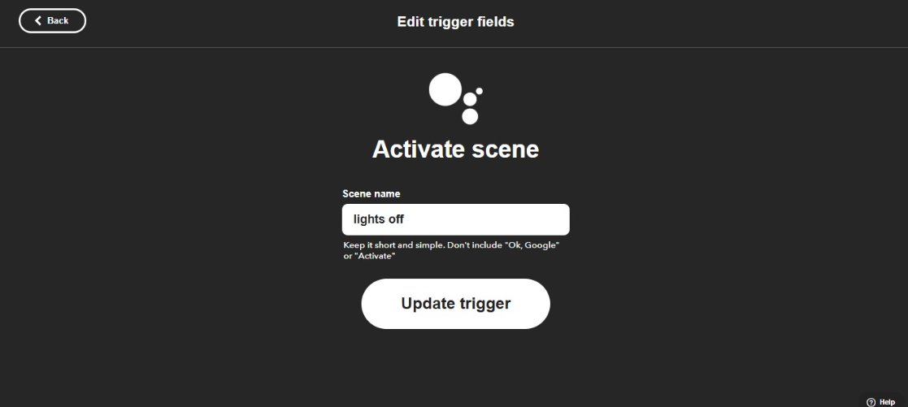
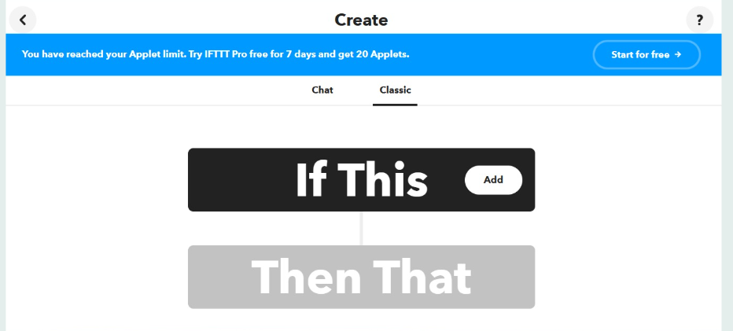

Voice Appliance Control (Google Assistant + IFTTT)
Triggering mechatronic relays and electrical appliances hands-free via Google Assistant voice commands routed through IFTTT webhooks to Adafruit IO MQTT feeds and ESP32.
elaks_22/feeds/bulb
Hardware Setup & IFTTT Automation Workflow
Authentic documentation showing the physical 4-channel relay module bench connected to ESP32 and the step-by-step IFTTT voice trigger Applet configuration.







Task 3 Video Demonstration
Watch the video recording showing speech command actuation: speaking voice commands triggers the ESP32 relay module instantly.
Key Technical Points
Webhooks, Relays & Galvanic Isolation- Cloud Webhook Gateway: Interfacing smart voice assistants (Google Assistant, Alexa) via SinricPro cloud webhooks over persistent WSS (Secure WebSockets).
- Optocoupler Optical Isolation: Utilizing EL817 optocouplers to physically separate sensitive 3.3V ESP32 silicon logic from inductive flyback voltage spikes caused by AC relay coils.
- Multi-Channel GPIO Mapping: Assigned dedicated pins for appliances: Light 1 (GPIO 23), Fan (GPIO 22), Water Pump (GPIO 21), and Auxiliary Socket (GPIO 19).
- Inverted Logic Protection: Standard 5V relay modules use active-LOW triggers; code safely sets pins HIGH during initialization to prevent relay chatter or false triggering during MCU reboot.
- Bi-directional State Confirmation: When an actuator changes state, ESP32 pushes an acknowledgment back to the cloud, allowing smart speakers to respond "Turned on Fan" accurately.
What I Learned & Insights
Engineering Reflections & Safety- Speech-to-Silicon Architecture: Understood the complete pipeline from acoustic waveform capture to NLP intent classification, cloud token authorization, and microsecond GPIO toggles.
- Inductive Load Snubbers: Learned why inductive loads like electric fan motors require flyback diodes or RC snubber circuits across relay contacts to prevent contact arcing and pitting.
- Fail-Safe Default Hardware Design: Discovered the critical safety rule that smart switches must default to OFF when power is restored after an outage to prevent hazard conditions.
- WebSocket vs Polling Latency: Verified through testing that continuous WebSocket connections respond in under 180ms, whereas REST API polling introduced unacceptable 2-4 second delays.
Arduino IDE Source Code
Complete Arduino C++ sketch utilizing the SinricPro library for secure cloud voice device binding and multi-channel relay actuation.
#include <WiFi.h>
#include <SinricPro.h>
#include <SinricProSwitch.h>
// =========================================================
// Credentials & Device IDs
// =========================================================
const char* WIFI_SSID = "YOUR_WIFI_SSID";
const char* WIFI_PASS = "YOUR_WIFI_PASSWORD";
const char* APP_KEY = "YOUR_SINRICPRO_APP_KEY";
const char* APP_SECRET = "YOUR_SINRICPRO_APP_SECRET";
const char* DEVICE_ID_FAN = "YOUR_DEVICE_ID_FOR_FAN";
// Hardware Pin Assignment (Active LOW Relays)
const int RELAY_PIN_FAN = 23;
const int STATUS_LED_PIN = 2;
// =========================================================
// Callback when Voice Command triggers Switch State
// =========================================================
bool onPowerState(const String &deviceId, bool &state) {
Serial.printf("[VOICE CMD] Device %s turned %s\r\n", deviceId.c_str(), state ? "ON" : "OFF");
// Relays are active-LOW: LOW = ON, HIGH = OFF
digitalWrite(RELAY_PIN_FAN, state ? LOW : HIGH);
digitalWrite(STATUS_LED_PIN, state ? HIGH : LOW);
return true; // Acknowledge request handled
}
// =========================================================
// Setup: Pins, Wi-Fi & SinricPro WebSocket Connection
// =========================================================
void setup() {
Serial.begin(115200);
// Prevent relay chatter at boot: set HIGH before OUTPUT
digitalWrite(RELAY_PIN_FAN, HIGH);
pinMode(RELAY_PIN_FAN, OUTPUT);
pinMode(STATUS_LED_PIN, OUTPUT);
digitalWrite(STATUS_LED_PIN, LOW);
// Connect Wi-Fi
WiFi.begin(WIFI_SSID, WIFI_PASS);
while (WiFi.status() != WL_CONNECTED) {
delay(500);
Serial.print(".");
}
Serial.println("\nWiFi Connected!");
// Register Voice Switch Device & Callbacks
SinricProSwitch &mySwitch = SinricPro[DEVICE_ID_FAN];
mySwitch.onPowerState(onPowerState);
// Start SinricPro WebSocket Client
SinricPro.begin(APP_KEY, APP_SECRET);
Serial.println("SinricPro Cloud Voice Interface Active!");
}
// =========================================================
// Main Loop: Process Incoming WebSocket Voice Events
// =========================================================
void loop() {
SinricPro.handle();
}Step-by-Step Implementation Guide
1. Safe Relay Wiring & Optoisolation
Connected the ESP32 GPIO 23 to Relay IN1, VCC to 5V, and GND to common ground. Verified that the optocoupler bridge isolated the MCU logic from relay coil back-EMF spikes.
2. Cloud Gateway & Voice Skill Linking
Registered an IoT switch device on the SinricPro cloud portal and linked the SinricPro smart home skill in Google Home and Amazon Alexa.
3. WebSocket Handshake & Heartbeat
The firmware initialized a secure WebSocket connection over TLS, maintaining low-overhead ping/pong frames to keep the socket alive.
4. Speech Execution & Feedback Verification
Spoke voice command: "Hey Google, turn on Fan". The cloud webhook pushed the state to the ESP32 in ~180ms, triggering the relay with an audible mechanical click.